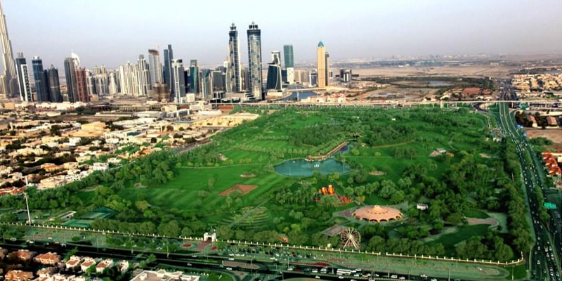

Nothing can beat the joy of the Abra ride. It is cheap, it is fun and my favorite way to travel to and fro from Bur Dubai to Diera. Once the only means of transport an Abra ride today is one of the cheapest ways to travel through the Dubai creek. It is also one of the most exciting things to do in Dubai as it connects you to the history of Dubai.
2.Al Dhiyafah Road
Another street famous for delicious eateries, and vibrant foodies Al Dhiyafah should definitely be on your things to do in Dubai list to capture the real essence of Dubai’s food offerings.
3. Bargain in the Al-Karama Market
Good thing about Dubai is that there are not just massive Shopping Malls. You can get the best things at Souks. The best place to bargain and bankrupt you with amazing deals on irresistible souvenirs is at the famous Karama Market in Dubai..
4.Hit on the Buffet Meals and Happy Hours
When in Dubai, cash on the buffet brunches and lunches. Even fine dining has happy hours that can actually satiate your hunger with a sumptuous meal at a very economical cost. My favorite is the ‘Centimetro’ at Souk Madinat Jumeirah with happy hours between 5pm to 8pm. They offer unbelievable discounts on cocktails too.
5. See the Jaw-Dropping Burj Khalifa
Believe me, the hype is not exaggerated. It does feel amazing to be on the world’s tallest building and seethe surroundings from its 144th floor observatory deck. I wonder what it must be like to live in homes on its top floors. Dubai Tour can’t be completed without seeing Burj Khalifa. That is why it should be on top of your “Things to do in Dubai” list.
6.Dubai Desert Safari
Believe me, the hype is not exaggerated. It does feel amazing to be on the world’s tallest building and seethe surroundings from its 144th floor observatory deck. I wonder what it must be like to live in homes on its top floors. Dubai Tour can’t be completed without seeing Burj Khalifa. That is why it should be on top of your “Things to do in Dubai” list.
7.Dinner at Dhow Cruise
Enjoy the glittering skyline of Dubai on the open deck of the Dhow Cruise and relish the lip-smacking cuisine at the lower Air Conditioned deck with entertainment, dance and music. This two hour Dhow cruise is a must things to do in Dubai.
8. Diera Street Food
Diera Street in Dubai is home to almost every famous international cuisine. While Indian, Pakistani, Bangladeshi, and Chinese are one of the most easily and economically available cuisines apart from Arabic, other world cuisine like Lebanese, Oriental, Japanese, English, are also available in the authentic taste.
9.World’s Largest Dancing Fountain
Dubai is your free ticket to see the world’s largest choreographed musical fountain also known the dancing fountains that would sweep you off your feet. The fountain dances according to the theme and you stand there mesmerized at its beauty. This is a must see things in Dubai.
10. Dubai Marina Walk in Evening or in Morning
Surrounded by high-end boutiques and some great outdoor seating cafes, Dubai Marina walk is one of my favorite places for a tasty English breakfast. An artificial city inside a metropolis, take a stroll at the plush walk of Dubai Marina and feel the vibe.
11.Ride on Driver-less Dubai Metro
Built in a record span of 18 months, the Dubai Metro is not only the cheapest and the fastest way to travel almost everywhere in Dubai, but also one of the most sophisticated and comfortable means of transportation. And the best part, its stations are located in close proximity to almost all major tourist attractions.
12.Heaven on Earth The Miracle Garden
Home to over 45 million natural flowers of numerous exotic species, the Dubai miracle garden is the largest and one of a kind in the world. One of the must things to do in Dubai, it is a visually refreshing treat. With in a few years it has become one of the best tourist attraction in Dubai.
13.Relax at the Safa Park

Despite the desert and Sand surrounding Dubai. Dubai is world renowned for having beautifully maintained lush green parks. Come to the parks especially Safa Park any time of the day for a relaxed time out with friends and family.